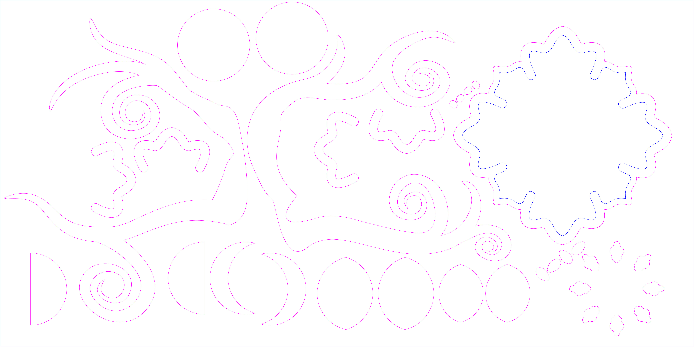
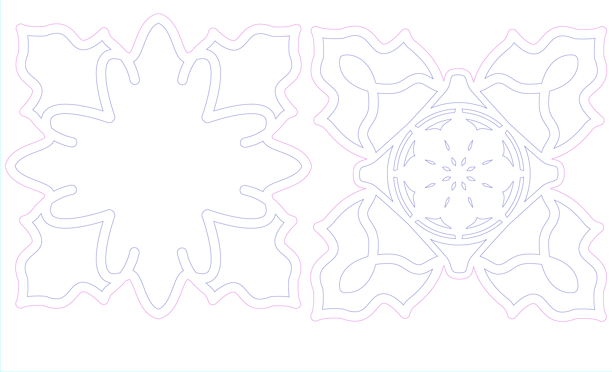
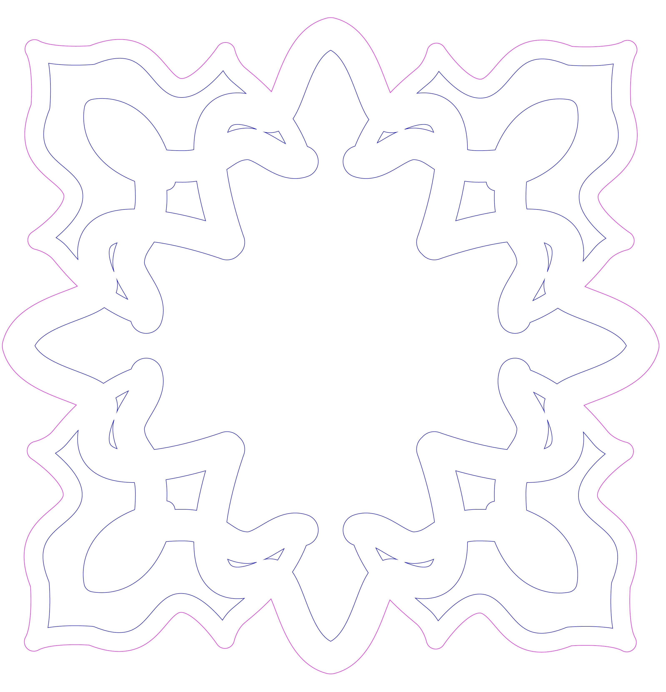

Senior Capstone
Mind of a Day Thinker
In the school of Art and Technology at the university I attend, we are required to complete a senior capstone encompassing skills we have learned and utilized over our time in the school. My pathway, Design and Production, though it was the default pathway, incorporated classes and skills in which I enjoyed and had an interest in.
Understand
I was unsure at the time of what I wanted to design for this project. I have learned many skills and had many ideas which I wanted to execute, but at the same time, I felt like I had none which I could translate into a semester long endeavor. Over my time at the school, I have come to increase my appreciation and passion for digital fabrication so in the end, I planned my project surrounding that concentration.
Research
Over the years, I have seen work from artists such as Gabriel Schama and Noah McGinley which inspired me to do a layered 3-D sculpture piece as well as incorporate other mediums to create a large mixed media piece. I spent about a month researching types of woods to work with this as well as designs which I would have the time and skill to execute. While my strong suit is in Adobe Illustrator, my sketching and drawing skills are sub-par which made me feel at a disadvantage.
Design
In the end, I sketched and scrapped designs using Procreate and settled on a basic skeleton designed in Illustrator.
Once I had a basic sketch set up, I duplicated it and hid the previous layer as a backup in case I changed my mind. I then adjusted the stroke to what I wanted and added on pieces that I wanted and scaled each piece in a few layers so there would be a proper offset on each layer. Once the layers were done and I had a final design set, I opened them in a separate file to set up my layers for laser cutting. I had to sort out all of my cuts and differentiate the separate interior and exterior cut layers by color.
 Final Result
Mind of a Day Thinker is a Mixed Media sculpture consisting of laser cut pieces made of Oak wall panels decorated with a resin and yarn. The project and consists of a central piece with accompanying hanging pieces which are in the sequence of moon phases. I ultimately decided not to include the backing branches that were originally designed and instead opted for only the hanging moon phases which gave this piece a look which leaned towards a sun-catcher look. Additional thoughts for this piece include spray painting all of the wood to add a color and cover any extraneous residue and marks from the building process.